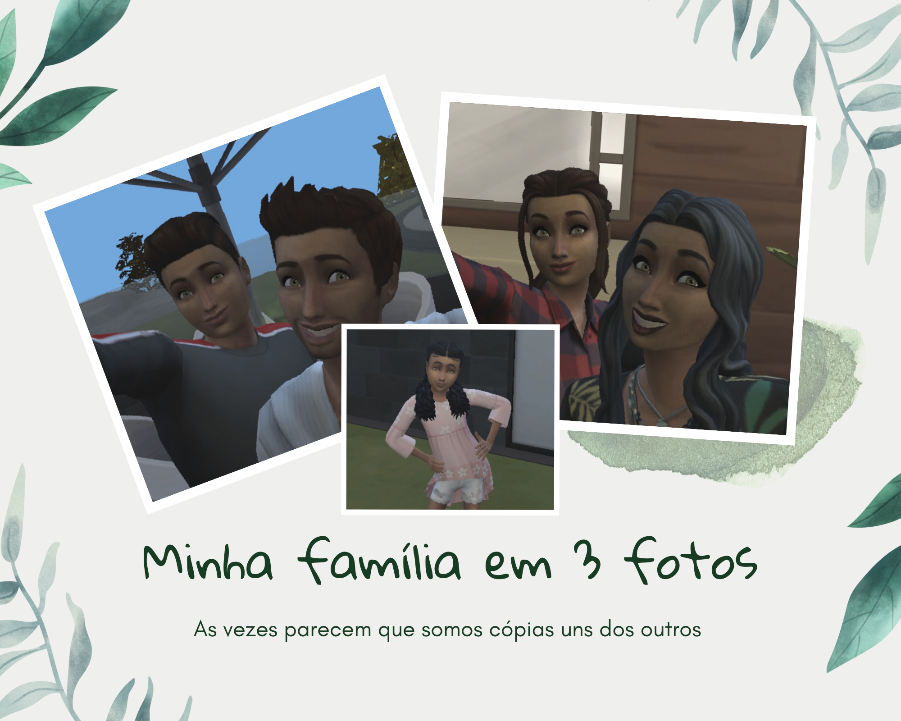

Minha Nova Casa na Praia
No mundo simmer, existe o paraíso Sulani dotado do poder da ilha, e dos espirítos que enchem a vibe de paz bem como conexão com a natureza. Foi esse o lugar que escolhi para construir a mais linda casa de praia que já vista na vida!

Vou mostrar os top 3 locais mais bonitos da casa.
Lugar 1: Vista da Jacuzzi para o mar: Depois de um dia de uma gravação cansativa, tiro um período de férias para colocar as ideias no lugar e descansar. A vista estonteante desse lugar acompanhada de um bom livro, vinho tinto e o queijo gorgonzola aliam minha saúde mental!
Lugar 2: área social com churrasqueira: Este é o local perfeito para comer e rir com os familiares e se tem algo que estimo é a minha família. Amo estar a mesa com eles, rir, comer e aquele churrasquinho.
Lugar 3: Jet Ski - essa casa tem um ponto para os jet skis, claro que com esse mar todo para explorar não dava para ficar sem algum barco para navegar e quem sabe encontrar tesouros ocultos!

Preciso confessar que a arquiteta dessa casa arrasou, ela não é maravilhosa? Bem... Sulani agora é o meu lugar preferido ( quem vê assim nem pensa que já era antes kkk). Mas enfim, beijos meus amores e tomem bastante água!
Minha Familia
Bom dia, boa tarde e boa noite, todos os “boas” pra qual seja o horário em que você estiver lendo :)
Então menines, agora vou falar sobre a minha lindíssima família, os primeiros a serem comentados serão os meus pais, eles estão casados a bastante tempo, quero achar algum amor que me aguente por tanto tempo assim, eles são tão fofos juntinhos. Sobre a profissão deles, o meu paizinho é artista, ele faz artes tão lindas, um dias desses tiro foto pra mostrar pra vocês, todos vão querer alguma, e não há quem ouse mexer no cavalete de pintura dele, ele faz desejo objeto a coisa mais preciosa da casa, já a minha mãe, é advogada, ou melhor advogada em ascensão, não adianta nem discutir com ela, ela é ótima no que faz, nunca temos argumentos para debater com ela e em caso de emergência procure qualquer espelho, minha mãe esará em um deles preparando seu discurso. Quase esqueci de falar o nome deles, eles são Breno e Helena Fernandes.
Quanto ao meu irmão, Miguel Fernandes, ele é o filhinho do meio, tem 16 anos, ainda está na escola, mas já tem uma banda, ele é músico, fazendo com sua guitarra seu objeto mais precioso da casa, ele cuida da guitarra como se fosse parte dele e por mais que eu encha ele, ele é muito gato, e solteiro em menines(hehe), ele é bem brincalhão e carinhoso com todo mundo, um amor.
Por último, a minha irmãzinha, a queridinha de todos aqui, não tem ninguém mais mimada do que ela, ela é a bonequinha da casa o nome dela é Maria Fernanda, mas todos chamam de Mafê, o apelido, ela tem só 6 aninhos, e é muito lindinha, está na escolinha e ela diz que a inspiração dela sou eu, até choro quando ela diz isso. Ela é muito boa com numeros, diferente de mim, e aquele rostinho de anjos esconde uns segredos que a gente as vezes não faz ideia, ela é do tipo que é melhor dar dinheiro do que intimidade, quando mais ela sabe de você mais perigosa ela é kkkkTenho algumas fotos nossas na casa no penhasco que vendemos, vocês lembram dela?
Eu pretendo colocar um video lá no yt mostrando o cotidiano aqui em casa, em estilo vlog sabe? Para vocês entenderem que não estou sendo exagerada quando digo que o pessoal daqui de casa é excentrico, mas eles são muito divertidos então acho que vocês vão gostar!
É isso gente, espero que tenham gostado de saber sobre a minha família. Amo vocês, beijos e como sempre, não esqueçam de beber água.


Abigail Fernandes
Oi meus amores! Eu sou a Abigail, cinéfila desde a infância, amante de cães e principalmente amo a minha linda husky siberiana Charlotte, livros de romance, arquitetura e design, e café. Depois de assistir Amelie Poulain decidi mudar minha vida por meio da sétima arte, embora eu não more em Del Sol Valley - a casa dos grandes nomes da atuação Simmer - quero chegar ao estrelato pela atuação. Seja bem-vindo ao meu blog!

Inscreva-se
Quer receber todas as novidades do blog para não perder nada? Faça aqui a sua inscrição para ser notificado toda vez que tiver uma novidade!